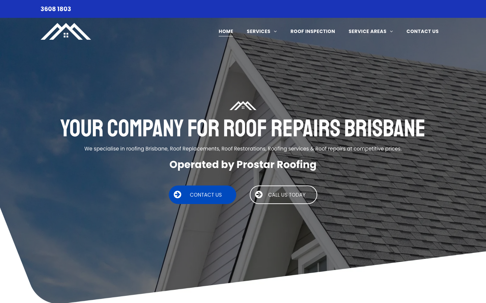

64/100 · moderate_candidate · 行业：roofer · 地区：Brisbane · Google 评价：5★ （9 条）
投入分级： C 批量轻触 — 模板邮件 + 报告
PDF 链接，无主动跟进
触发依据： - C · moderate_candidate · audit 64 · 9 评论 5★ (未达 B 标准)
下一步行动： 标准模板邮件 + master.md PDF 链接，无主动跟进。等客户回复触发后再投入。
TBD · audit 不完整
线索来源 · 联系开场可用: - 来源:
Google Places API (官方搜索) - 搜索关键词:
roofer brisbane - 结果排名: 第 13 位 -
首次发现: 2026-05-14 - Batch:
places-roofer-brisbane-202605150200
审计结论： audit_score=64 → moderate_candidate · weakest: gbp 24, visual 50

慢速 4G 加载实景视频（1.6 Mbps · 150ms 延迟 · 4× CPU 节流，模拟真实手机访客的体验）：
The page has a clear roof-repair message and visible buttons, but placeholder branding, weak mobile contact clarity, and missing proof make it feel unfinished for a Brisbane roofing customer.
新鲜度 4/10 · 信任度 3/10 ·
转化准备度 4/10 · 设计年代 outdated
值得保留的优点： - Roof repair service is mentioned immediately in the hero. - Phone number is visible on desktop at the very top. - Mobile layout includes both phone and menu icons above the fold.
技术事实
The main hero headline says “YOUR COMPANY FOR ROOF REPAIRS BRISBANE” instead of the visible business name.
普通话翻译
首页最显眼的标题像模板占位文字，不像一个真实商家的正式网站。
对客户的影响
客户通常在几秒内判断这家公司靠不靠谱；如果第一眼像模板或没做完，很多人会直接回到 Google 商家列表找下一家。
正确长啥样
Hero headline uses the actual business name or a direct local offer, such as “Brisbane Roof Repairers” with a short supporting line about leak repairs, restorations, and inspections.
Redesign 怎么改
Replace the placeholder-style H1 with the real brand/service promise: “Brisbane Roof Repairers” or “Roof Repairs Brisbane - Fast Local Repairs”, then add one concrete subline about response area and services.
技术事实
On mobile, the top-left blue square only shows a phone icon, while the actual number is not visible in the header.
普通话翻译
手机端只看到电话图标，看不到电话号码，客户要自己猜这个按钮能不能打电话。
对客户的影响
很多本地维修咨询发生在手机上；少一步清楚的“点击拨打”就可能让急着修漏水的客户转去打竞争对手电话。
正确长啥样
Mobile header has a sticky button reading “Call 3608 1803” or a full-width bottom call bar with the phone number visible.
Redesign 怎么改
Replace the standalone phone icon with a labelled tap-to-call control: “Call 3608 1803”, and keep it sticky on mobile.
技术事实
title=‘# Your Company for Roof Repairs Brisbane’ contains-name=true contains-niche=false
普通话翻译
你网站的浏览器标签 title 没把业务名字 + 服务关键词写清楚（比如该写「Brisbane Roofing - Brisbane Roof Repairers - roofer Brisbane」，但目前是泛泛一句）。
对客户的影响
Google 搜索结果里展示的就是这个 title。写不清楚 = 排名靠后 + 即使排上来客户也不知道是不是匹配的服务。SEO 最便宜的修复，但很多本地企业完全没做。
技术事实
The desktop header shows only a white roof icon, and the mobile header shows only a roof icon with colored accents; no business name is visible beside it.
普通话翻译
网站顶部只有图标，没有清楚写出公司名字，客户不容易记住你是谁。
对客户的影响
本地客户会同时看好几家屋顶维修公司；如果品牌名不清楚，你更容易被当成普通模板网站而被跳过。
正确长啥样
Header shows the roof mark plus “Brisbane Roof Repairers” in readable text, with the phone number or call action close by.
Redesign 怎么改
Add the business name as text next to the logo on desktop and under or beside the mark on mobile, keeping it visible above the fold.
技术事实
The visible hero area contains the logo, headline, service sentence, “Operated by Prostar Roofing”, and two buttons, but no reviews, licence, years in business, suburbs served, or guarantee is visible.
普通话翻译
首页第一屏没有展示评价、资质、保险或服务保障，客户只能看到广告语和按钮。
对客户的影响
屋顶维修金额高、风险高，客户会更谨慎；缺少信任证明会让原本准备询价的人先去找看起来更可靠的商家。
正确长啥样
Above the fold includes compact proof such as “4.8-star Google rating”, “Licensed & insured”, “Brisbane-wide roof repairs”, and “Leak inspections available”.
Redesign 怎么改
Add a proof strip directly under the hero copy with 3-4 trust badges: Google rating, licensed/insured, Brisbane service area, and repair warranty or inspection offer.
技术事实
The hero shows two similar pill buttons side by side: a blue “CONTACT US” button and an outlined “CALL US TODAY” button.
普通话翻译
两个按钮看起来差不多，客户不知道应该点“联系”还是“今天打电话”。
对客户的影响
选择越多，行动越慢；对漏水、风暴损坏这类需求，最赚钱的动作通常是直接来电，按钮应该把客户推向这一步。
正确长啥样
One dominant phone CTA, such as “Call 3608 1803”, with a secondary smaller “Request quote” link.
Redesign 怎么改
Make the primary CTA a high-contrast tap-to-call button with the number included, and demote the contact form action to a secondary text link or smaller button.
技术事实
On mobile, the oversized all-caps headline breaks into large stacked lines and fills most of the screen before the service text and buttons.
普通话翻译
手机端标题太大，占了太多空间，真正能让客户行动的信息被挤到下面。
对客户的影响
手机访客通常快速扫一眼就决定是否继续；如果第一屏只看到大字，没看到电话号码和可信证明，就会减少来电。
正确长啥样
Mobile hero uses a shorter 2-3 line headline, 16px+ readable body text, and a visible call button within the first screen.
Redesign 怎么改
Rewrite the mobile H1 to a shorter line, reduce the font size and line height, and move the call button plus one trust badge higher in the first viewport.
我们前面那段「慢速 4G 加载视频」是我们这边的实验室结果。这一段是 Google 自己对你网站打的分，包括过去 28 天 真实访客的网络体验数据（CRUX field data）。
Lighthouse 分数（实验室）：
| 维度 | 分数 |
|---|---|
| 性能 (Performance) | 60/100 |
| 可访问性 (Accessibility) | 88/100 |
| 最佳实践 (Best Practices) | 96/100 |
| SEO | 85/100 |
Lab 关键指标： LCP 8.1s · FCP
2.6s · CLS 0.009 · TBT 346ms
Google 建议的优化项（按节省时间排序，前 2）：
Lighthouse 分数： Performance 92 · A11y 92 · Best Practices 100 · SEO 85
PSI 给的是宏观分数，下面是具体可改的两块：图片格式与 tracker 脚本。
总评： 基本未优化 — redesign 可显著降低图片下载量
具体问题： - [major] 22 张图几乎全是 JPG/PNG，未用 WebP/AVIF — 估算可节省 30-50% 图片下载量 - [minor] 22/22 张图无响应式 srcset — 移动端浪费带宽 - [minor] 22/22 张图未 lazy load — 首屏外的图阻塞主线程 - [major] 19/22 张图缺 alt 文字 — 影响 SEO + 可访问性 + AI 抓取 - [minor] 14/22 张图无显式 width/height — 加重 CLS 布局抖动
已识别的 tracker：
| 工具 | 类型 | 请求数 | 字节 |
|---|---|---|---|
| Google Tag Manager | analytics | 1 | 157.9 KB |
| Google Analytics | analytics | 1 | 0.0 KB |
客户最常担心的问题：「我重做网站，会不会丢掉 Google 排名？」这一段直接回答。
http://www.thebrisbaneroofrepairers.com/sitemap.xml页面分类：
| 类型 | 数量 |
|---|---|
| service_area_page | 9 |
| 服务详情页 | 2 |
| 首页 | 1 |
| area_page | 1 |
| 联系 / 报价 | 1 |
| Blog 文章 | 1 |
Sitemap lastmod 跨度： 最旧 2025-12-07 → 最新 2025-12-07
Redirect 计划承诺： redesign 上线时我们会附一份 15 条 1:1 redirect 表（旧 URL → 新 URL），保证 Google 已经索引的页面权重无损迁移。已经在 Google 第一二页的关键词不会丢。
长尾覆盖： 强 — 已有 5+ 服务×区域页，长尾流量基础在
现有服务页样本： /metal-roof-repair ·
/how-to-find-leaks-in-roof
现有服务×区域页样本：
/gutter-repairs-brisbane ·
/roof-repairs-brisbane ·
/roof-repairs-brisbane-southside ·
/tiled-roof-repairs-brisbane ·
/roof-inspection-brisbane
客户能不能 方便地 把信息留下来 =
直接的转化路径。这一段审视所有 <form> 元素的可用性 +
防 spam 配置。
未检测到任何 anti-spam 措施（reCAPTCHA / hCaptcha / Turnstile / honeypot 都没有）— 表单极容易被自动机器人灌爆，垃圾询盘会让客户对真实询盘麻木。redesign 时建议加 Cloudflare Turnstile（不可见，免费）。
Audit 总结：
weak (只有 1/3 —
邮件营销前必须修)这是后续 「Social Media Management 月度包」 或 「Cold Outreach 启动包」 的前置条件 —— 邮件 DNS 没修好，发出去的邮件全进垃圾箱。redesign 时一并处理。
从网站源码识别出来的工具，能帮我们判断这位客户的数字成熟度。
数字成熟度打分： 2 / 6 （中 — 已有基础设施，缺少深度运营）
客户可能有数月 / 数年的历史数据 + 广告投放受众 sit 在这些 ID 上面。重做时必须用同一套 ID 重新接进新网站，否则等于清零所有累积。
我们 redesign 交付清单会把这些列为「必须 setup 项」。
本地服务的客户在掏钱之前会查这些凭证。缺失 = 客户跳到下一家。
信任分： 10/100
GEO = Generative Engine Optimization。ChatGPT、Perplexity、Google AI Overviews 这些 AI 搜索产品不像传统搜索引擎那样按”关键词排名”工作，它们直接抓取结构化数据并把答案合成给用户。如果你的网站在 AI 抓取这一块做得不到位，等于在生成式搜索时代隐身。
AI 可发现性总分： 30 / 100 — AI agent / ChatGPT 几乎无法准确引用此网站 — 在生成式搜索时代等于隐身
localbusiness_schema — LocalBusiness JSON-LD
presenteeat_warranty_trust — warranty/guarantee
mentionedjsonld_at_least_one — 3 JSON-LD block(s)
detected on pagellms_txt_present (5 分) — no /llms.txt at
standard pathai_bot_robots_policy (5 分) — robots.txt has no
explicit policy for AI crawlers (GPTBot/ClaudeBot/etc)service_schema (10 分) — no Service JSON-LDfaqpage_schema (10 分) — no FAQPage JSON-LD
(loses AI Overview / featured snippet eligibility)aggregaterating_schema (5 分) — no
AggregateRating JSON-LD (★ rating not shown in search snippets)breadcrumb_schema (5 分) — no BreadcrumbList
JSON-LDsemantic_landmarks (10 分) — 1 semantic
landmarks present: <navfaq_qa_pattern (10 分) — 0 question-style
heading(s) found (Q&A format helps AI extraction)eeat_business_credentials (10 分) — only 1/4
credentials found (license/QBCC) — need ≥2 of: ABN, license/QBCC,
years-in-business, insurance销售切入： 「ChatGPT 现在每月 30 亿次搜索，本地服务用户问『Brisbane 哪家屋顶公司靠谱』，AI 回答时只引用结构化数据完整的网站。你目前在这个新阵地的得分是 30/100。」
-2026-05-11-v1codex_cliGoogle Places · most_relevant (max 5)